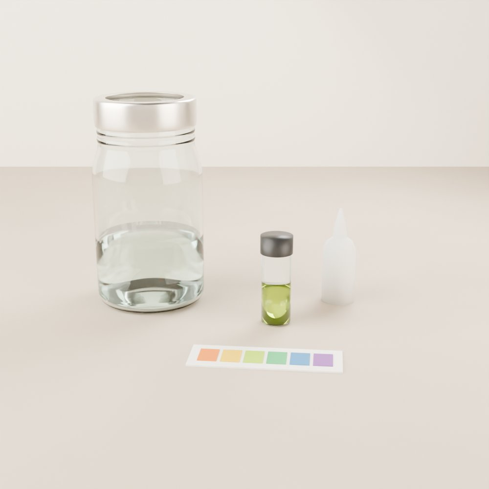

Beginner guide · pH
pH, made simple.
pH sounds like chemistry class, but it comes down to one number and a few drops. Get it roughly right and your plants can actually use the food you give them.

01 The idea
What pH is
pH tells you how acidic or alkaline something is, on a scale from 0 to 14. Seven is neutral, like pure water. Lower numbers are acidic, like lemon juice or vinegar. Higher numbers are alkaline, like baking soda.
Why it matters: plants can only take up their food when the pH is in the right range. If it drifts too far, the food is still in the water, but the roots can't use it. This is called nutrient lockout, and it often shows up as pale or yellow leaves.
The good news: plants don't need it perfect. Anywhere inside the range is fine.
02 Target ranges
The right pH for each way to grow
| Way to grow | Aim for | Do you need to test? |
|---|---|---|
| Water jars | 5.5 to 6.5 | Helpful. Test once when you mix the water. |
| Bubble buckets | 5.5 to 6.5 | Yes. Check at least once a week, because it drifts. |
| Pots of soil | 6.0 to 7.0 | Rarely. Bagged potting mix is usually already in range. |
| Microgreens | No need | No. They're harvested before pH makes a difference. |
Water methods sit a little lower than soil because there's no soil to buffer (steady) the pH.
03 Plant chart
Common plants in water
Most food plants are happy around 6.0, so if you're growing a mix in water, aim for that. For one plant on its own:
| Plants | Aim for |
|---|---|
| Lettuce, kale, bok choy | 5.5 to 6.5 |
| Basil, mint, parsley | 5.5 to 6.5 |
| Green onions, chives | 6.0 to 7.0 |
| Spinach | 6.0 to 7.0 |
| Tomatoes | 5.5 to 6.5 |
| Peppers, cucumbers | 5.8 to 6.5 |
| Strawberries | 5.5 to 6.2 |
Different sources give slightly different numbers. These are common middle-of-the-road ranges.
04 Method
How to test and adjust
-
Mix in the plant food first
Plant food changes the pH, so always test after it's mixed in, not before (our plant food guide shows how to mix it). Tap water on its own is often around 7 to 8.
-
Test a small sample
Test drops (the cheapest): put a little water in the test tube, add the drops, and match the colour to the chart. A digital pen: dip it in and read the number. Now and then, pens need calibrating, which means resetting them with the test liquid they come with so they read correctly.
-
Too high? Add "pH down"
Add a few drops, stir well, wait a minute, and test again. Go slowly, because a little goes a long way, especially in a small jar.
-
Too low? Add "pH up"
This is less common. Same idea: a few drops, stir, wait, and test again.
-
Don't chase tiny changes
If it's inside the range, leave it. Moving it back and forth stresses plants more than a small drift does.
- Handle pH up and down with care. They're strong acids and bases. Keep them away from kids and pets, wear gloves, and rinse your skin with water if you spill any. Never pour the two straight into each other.
05 Troubleshooting
If something looks wrong
- Pale or yellow leaves, even though you fed them
- Check the pH first. If it's out of range, adjust it. If it's fine, the plant may just need fresh nutrient water.
- The pH keeps creeping up in a bucket
- That's normal as plants feed. Bring it back down when it leaves the range, and change the water every couple of weeks.
- The pen gives a different number every time
- It probably needs calibrating, or a rinse. Rinse the tip with clean water between tests and keep it in the storage liquid it came with, so it doesn't dry out.
- Test drops are hard to read
- Hold the tube against a white sheet of paper in daylight. If the colour sits between two on the chart, go with the middle.
Stuck on a reading?
Join the Root Collective and post your numbers. Someone will help you work it out.
Join us, it's free